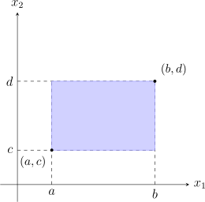

1.1 Preliminaries
In mathematical statistics, we often transform one or more random variables to create new variables. For example, if \(X_1, X_2, \dots , X_n\) represent a sample, the sample mean \(\bar {X} = \frac {1}{n}\sum X_i\) is a function of those variables. To understand the behavior of \(\bar {X}\), we must first master the properties of the underlying distributions.
1.1.1 Probability Mass and Density Functions
We categorize our variables into two distinct worlds: the discrete and the continuous.
1. Discrete PMF: A function \(f_X(x, \theta ) = P(X=x)\) for a countable set of values. It must satisfy: \[ f_X(x, \theta ) \geq 0 \quad \text {and} \quad \sum _{i} f_X(x_i, \theta ) = 1 \] 2. Continuous PDF: For a continuous variable \(X\), the probability at a single point is zero. Instead, we define the density such that: \[ f_X(x, \theta ) \geq 0 \quad \text {and} \quad \int _{-\infty }^{\infty } f_X(x, \theta ) , dx = 1 \]
1.1.2 The Cumulative Distribution Function (CDF)
The CDF is the ”bridge” between discrete and continuous worlds. It is defined as: \[ F_X(x) = P(X \leq x)\] Properties:
- Monotonicity: If \(a < b\), then \(F_X(a) \leq F_X(b)\).
- Boundary Limits: \(F_X(-\infty ) = 0\) and \(F_X(+\infty ) = 1\).
- Right-Continuity: \(\lim _{h \to 0^+} F_X(x+h) = F_X(x)\).
1.1.3 The Moment Generating Function (MGF)
The MGF is a powerful tool because it uniquely identifies a distribution. If two variables have the same MGF, they have the same distribution. \[ M_X(t) = E\left [e^{tX}\right ] \] The “Moment-Generating” Property: To find the \(m^{th}\) moment about the origin (\(E[X^m]\)), we differentiate the MGF \(m\) times and evaluate at \(t=0\): \[ E(X^m) = \left . \frac {d^m}{dt^m} M_X(t) \right |_{t=0} \]
1.1.4 Multivariate Distributions and Independence
When dealing with functions of variables, we rarely work with just one \(X\). We work with vectors \(\mathbf {X} = (X_1, X_2, \dots , X_k)^T\).
Definition 1.1.1. If \(X_1,X_2,\cdots X_k\) are \(k\) discrete random variables then the joint discrete function denoted by \(f_{X_1,X_2,\cdots ,X_k}(x_1,x_2,\cdots ,x_k,\theta )\) is given by \[f_{X_1,X_2,\cdots ,X_k}(x_1,x_2,\cdots ,x_k,\theta ) = P(X_1=x_1, X_2=x_2,\cdots , X_k=x_k)\] and \[\sum \limits _X P(X_1=x_1,\cdots , X_k=x_k) = \sum _{X_1}\cdots \sum _{X_k} P(X_1=x_1,\cdots , X_k=x_k) = 1.\]
Definition 1.1.2. If \(X_1,X_2,\cdots ,X_k\) are \(k\) continuous random variables, then the joint pdf denoted by \(f_{X_1,X_2,\cdots ,X_k}(x_1,x_2,\cdots ,x_k,\theta )\), is such that
- \(f_{X_1,X_2,\cdots ,X_k}(x_1,x_2,\cdots ,x_k,\theta )\,\, \geq \, 0 \,\,\) for all \(\,\, X = (x_1, x_2, \cdots , x_k)^t\)
- \(\int \limits _X f_{X_1,X_2,\cdots ,X_k}(x_1,x_2,\cdots ,x_k,\theta )\,\, dX = 1\) \[\int _{X_1}\int _{X_2}\cdots \int _{X_k} f_{X_1,X_2,\cdots ,X_k}(x_1,x_2,\cdots ,x_k,\theta )dx_k\, dx_{k-1}\cdots dx_1\]
Definition 1.1.3. The random variables \(X_1,X_2,\cdots ,X_k\) (discrete or continuous) are stochastically independent if and only if \begin {align*} f_{X_1,X_2,\cdots ,X_k}(x_1,x_2,\cdots ,x_k) & = f_{X_1}(x_1)\, f_{X_2}(x_2)\, \cdots \, f_{X_k}(x_k)\\ & = \prod ^k_{j=1} f_{X_j} (x_j) \end {align*}
where \(f_{X_j}(x_j)\) is the marginal probability function \(j = 1,2,\cdots , k\).
1.1.5 Joint Moment Generating Functions
The joint MGF allows us to handle sums of random variables with ease.
Definition 1.1.4. The joint moment generating function of \(X_1, X_2 , \cdots ,X_k\) denoted by \(M_{X_1, X_2, \cdots , X_k} (t_1, t_2,\cdots , t_k)\) is given by \begin {align*} M_{\textbf {X}} (\textbf {t}) & = E\left (e^{x_1t_1 + \cdots x_kt_k}\right )\\ & = E\left [e^{\sum \limits ^k_{j=1}x_jt_j}\right ]\\ & = E\left [\prod ^k_{j=1}e^{x_jt_j}\right ]\\ & = E\left [e^{XT}\right ]. \end {align*}
Theorem 1.1.5. Random variables \(X_1,X_2,\cdots ,X_k\) are stochastically independent if and only if the joint moment generating function is a product of the MGFs of the marginals \begin {align*} M_{X_1,\cdots , X_k} (t_1,\cdots , t_k) & = M_{X_1}(t_1)\, \cdots \, M_{X_k}(t_k)\\ & = \prod ^k_{j=1} M_{X_j}(t_j). \end {align*}
1.1.6 Properties of the Bivariate CDF
For a bivariate distribution, the probability that \((X_1, X_2)\) falls within a rectangle \([a,b] \times [c,d]\) is: \[ P(a \leq X_1 \leq b, c \leq X_2 \leq d) = F(b,d) - F(b,c) - F(a,d) + F(a,c).\]

Questions on this section
Stuck on something here? Ask below and it stays attached to this topic.